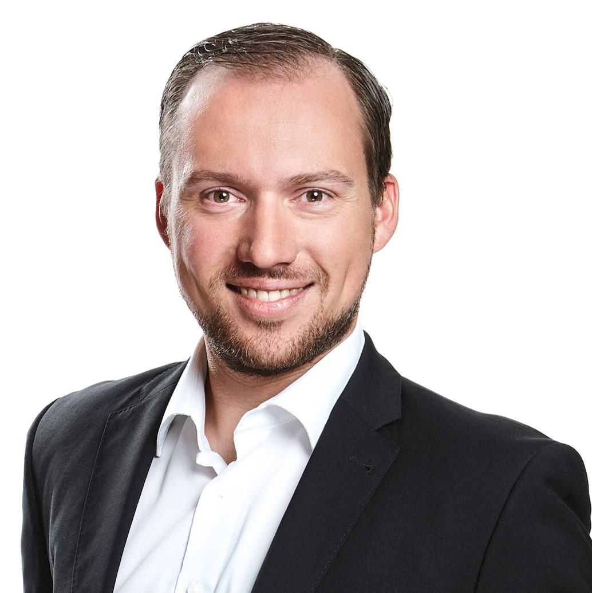

Dr. Sebastian
Schoenen
Leiter des Data & AI Center of Excellence der Solvd Group · Director Innovation & Technology bei der ControlExpert GmbH
“Own the brain. Rent the body.”
- Agentische KI
- Computer Vision
- Generative KI
- InsurTech
- Promovierter Physiker
- 173+Publikationen
- 25.5kZitationen
- 6Patente
- 75+Data- & KI-Spezialisten geführt
KI-Führung. Von der Strategie bis zur Produktion.
Ich leite das Data & AI Center of Excellence der Solvd Group, der Schaden- und Reparaturmanagement-Gruppe mit mehr als 200 Kunden aus Versicherungs-, Leasing- und Flottenunternehmen in 46 Ländern, und bin Director Innovation & Technology der ControlExpert GmbH. Das Mandat umfasst Innovation und das Data-&-AI-Produktportfolio der Gruppe: eine Organisation von über 75 Data- und KI-Spezialisten in agentischer KI, Computer Vision, generativer KI und NLP, mit Budgetverantwortung für das Portfolio.
Die Vision, auf die wir hinarbeiten, ist einfach: Autofahrer bekommen ihren Schaden überall am selben Tag fair ersetzt. Das Center of Excellence ist der technologische Motor dahinter. Wir entwickeln Ansätze jenseits dessen, was heutige Lösungen können, und machen daraus Kundennutzen. ClaimsPilot, unsere agentische Schadenplattform, ist bisher das sichtbarste Ergebnis.
Als Gesamt-Business-Owner für Daten- und KI-Produkte verantworte ich die Entscheidungen, die bestimmen, ob das im großen Maßstab gelingt: Forschungs- und Innovationsstrategie, Make-or-Buy für KI-Produkte („Own the brain, rent the body“: die differenzierende Intelligenz gehört uns, die Infrastruktur wird gemietet), die IP-Strategie hinter sechs Patenten, MLOps und das Betriebsmodell des CoE. Plattform- und Cloud-Strategie liegen bei der IT; dort bin ich zentraler Stakeholder und richte sie an der Produktstrategie aus. KI-Governance wird zentral vom Chief Data Officer definiert und von mir umgesetzt: Responsible-AI-Regeln, Anforderungen des EU AI Act und Modellrisikomanagement für KI, die über echte Schadenfälle entscheidet.
Forschung bleibt Teil der Arbeit, über ein aktives Netzwerk aus Universitäten und Instituten. Vor meiner Zeit in der Industrie habe ich selbst an der RWTH Aachen geforscht und in Astroteilchenphysik promoviert. Meine Promotionsarbeit in der IceCube Collaboration war Teil der Entdeckung astrophysikalischer Neutrinos, die mit dem Physik-Nobelpreis 2026 gewürdigt wurde. Das prägt bis heute, wie ich führe: erst messen, dann entscheiden.
Promotion in Physik
RWTH Aachen · Astroteilchenphysik, IceCube Collaboration · 2012–2017
Teil der Entdeckung, die mit dem Physik-Nobelpreis 2026 gewürdigt wurde
M.Sc. Physik
RWTH Aachen · Hochenergie-Teilchen- und Astroteilchenphysik · 2010–2012
ControlExpert GmbH / Solvd Group
Langenfeld (Rheinland) · seit 2018
Forschungsnetzwerk
RWTH Aachen · TU Berlin · Bergische Universität Wuppertal · Ruhr-Universität Bochum · TU Dortmund · Fraunhofer · DFKI und weitere
Standort
Region Köln/Bonn, Deutschland
Sprachen
Deutsch (Muttersprache) · Englisch (verhandlungssicher)
Beruflicher Werdegang
- Apr. 2025 – heute
Head of Data & AI Center of Excellence
Solvd Group · HybridAufbau und Leitung des Data & AI Center of Excellence der Gruppe: über 75 Data- und KI-Spezialisten in agentischer KI, Computer Vision, GenAI und NLP für eine Gruppe mit über 200 Versicherungs-, Leasing- und Flottenkunden in 46 Ländern. Gesamt-Business-Owner für Daten- und KI-Produkte: Produktportfolio und Budget, Forschungs- und Innovationsstrategie, Make-or-Buy- und IP-Entscheidungen, MLOps und Betriebsmodell des CoE sowie Umsetzung der gruppenweiten KI-Governance. Verantwortlich für ClaimsPilot, die agentische Schadenplattform der Gruppe, von der Strategie bis zur Produktion.
- Apr. 2023 – heute
Director Innovation & Technology
ControlExpert GmbH · Vor OrtVerantwortung für die Forschungs- und Innovationsstrategie für KI bei einem Unternehmen, das rund 20 Millionen Schadenfälle pro Jahr bearbeitet. Make-or-Buy-Entscheidungen für Kern-KI-Fähigkeiten, Steuerung der F&E-Pipeline und der IP-Strategie hinter sechs Patenten, zentraler Stakeholder für die Plattform- und Cloud-Strategie der IT sowie öffentlich geförderte Forschung mit Partnern wie RWTH Aachen, Fraunhofer und Bergischer Universität Wuppertal.
- Okt. 2020 – März 2025
Head of Research & Development
ControlExpert GmbHLeitung der F&E-Abteilung (Data Science, Computer Vision, NLP) und Überführung von KI-Forschung in die Produktion. KI-Schaden- und Kostenbewertung, Bildbetrugsprävention und automatisierte Rechnungsprüfung gingen in dieser Zeit live. Begutachtete Publikationen, Patente und geförderte Projekte wie OpenGPT-X, HUMAINE, BIT, FedXtract und PlanQK.
- Apr. 2019 – Juni 2023
Product Manager AI Services
ControlExpert GmbHParallel zur F&E-Leitung Product Owner für die KI-Services von ControlExpert. Skalierung der KI-Technologien von ersten Piloten zu Produkten im Standard-Schadenprozess: KI-Schaden- und Kostenbewertung, Bildbetrugsprävention, Rechnungsprüfung und Dokumentenverarbeitung, später die ersten GenAI-Services. Roadmap und Rollout mit Versicherern in Deutschland, Europa, UK, USA, LATAM und APAC; Kundenfeedback in F&E-Prioritäten überführt.
- Apr. 2019 – Okt. 2020
Team Leader Research and Development
ControlExpert GmbHAufbau und Leitung des F&E-Teams, aus dem später die F&E-Abteilung hervorging: angewandtes Deep Learning kombiniert mit Schaden-Fachwissen.
- Okt. 2018 – Apr. 2019
Team Leader AI Image Recognition
ControlExpert GmbHLeitung eines Data-Science-Teams für tiefe neuronale Netze zur Erkennung von Fahrzeugschäden, parallel weiterhin eigene Data-Science-Arbeit.
- Feb. 2018 – Sept. 2018
Data Scientist
ControlExpert GmbHMaschinelles Lernen auf Schadendaten; Grundlage für die automatisierten Schadenbewertungs-Pipelines.
- Feb. 2017 – Jan. 2018
Data Scientist
umlaut (vormals P3 Group) · Städteregion AachenData Science im industriellen Beratungsumfeld nach Abschluss der Promotion.
- Okt. 2012 – Jan. 2017
Wissenschaftlicher Mitarbeiter (Doktorand)
RWTH Aachen · III. Physikalisches Institut BPromotion in der IceCube Collaboration. Hauptbeitrag: die Sechs-Jahres-Messung des kosmischen Myon-Neutrino-Flusses von der Nordhemisphäre (The Astrophysical Journal, 2016), Teil der Entdeckung, die 2026 mit dem Physik-Nobelpreis gewürdigt wurde.
Fachliche Schwerpunkte
Führung auf Managementebene
- Forschungs- & Innovationsstrategie
- Data-&-AI-Produktportfolio
- Organisationsaufbau
- Budgetverantwortung
- Make-or-Buy-Strategie
- IP-Strategie
- Umsetzung KI-Governance / EU AI Act
- Kommunikation mit Geschäftsführung & Stakeholdern
KI & maschinelles Lernen
- Agentische KI
- Generative KI
- Deep Learning
- Computer Vision
- NLP / NLU
- Prädiktive Modellierung
- Neural Architecture Search
- MLOps
Domänenwissen
- Schadenmanagement
- InsurTech
- Reparaturmanagement
- Produktorientierte KI
- Schadenautomatisierung
- Betrugserkennung
- Schadenbewertung
- Kfz-Versicherung
Forschung & Methoden
- F&E-Management
- Wissenschaftliches Publizieren
- Datenanalyse
- Mathematik
- Astroteilchenphysik
- Patententwicklung
- Unsicherheitsquantifizierung
Wirkung & Innovation
- Flaggschiff-Produkt
ClaimsPilot – agentische KI für den End-to-End-Kfz-Schadenprozess
Produktive Multi-Agenten-Plattform, die den gesamten Kfz-Schadenprozess orchestriert: mehrsprachige Aufnahme per Voice, Online, Dokument und E-Mail, automatisierte Schaden- und Kostenbewertung mit Reparatur-, OEM- und Policendaten, bis zu Regulierung und Kundenkommunikation. Betrieben auf AWS. Gewinner des AI Communication Award 2026.
- KI-Produkt
Claims Advisor
Next-Best-Action-System in Echtzeit im FNOL-Prozess. Analysiert eingereichte Schadenfotos und Fallkontext und empfiehlt den Bearbeitungsweg: Reparatur, Ersatz oder Totalschaden.
- KI-Produkt
KI-Schadenbewertung – Bild & Telematik
Kombiniert Deep Learning auf Schadenbildern mit Telematik-Sensordaten für Schweregrad-Scoring, Reparatur-/Ersatz-Entscheidungen auf Teileebene und Kostenschätzung. Rückgrat der berührungslosen Schadenbearbeitung.
- KI-Produkt
KI-Kostenbewertung
ML-Modell zur automatisierten Schätzung der Reparaturkosten auf Basis der Schadenbewertung. Datenbasierte Kosten-Benchmarks im großen Maßstab, weniger manuelle Prüfung.
- KI-Produkt
Image Fraud Prevention
KI-Bildanalyse zur Erkennung manipulierter, KI-generierter oder wiederverwendeter Schadenfotos. Findet Muster, die dem menschlichen Prüfer in großen Portfolios entgehen.
- KI-Produkt
FraudGuard AI
Hybride Betrugserkennung aus regelbasierter Logik und eigenem KI-Modell, die auffällige Schadenmuster über Dokumenten- und Bildprüfungen hinweg markiert.
- KI-Produkt
KI InvoiceCheck
Automatisierte Rechnungsprüfung für Kfz-Schäden. Gleicht Reparaturrechnungen mit Schadenbewertung, Stundensätzen und Teilepreisen ab und erkennt Überabrechnung und Widersprüche.
- KI-Produkt
Intelligent Document Processing
End-to-End-KI-Pipeline, die Informationen aus unstrukturierten Schadendokumenten wie Reparaturrechnungen, Polizeiberichten und Attesten extrahiert, klassifiziert und strukturiert.
- KI-Produkt
Voicebot für die Schadenmeldung
Konversationelle KI für die vollautomatische Erstmeldung (FNOL). Führt Anspruchsteller durch die Schadenmeldung, erfasst strukturierte Daten und stößt Workflows an.
- KI-Produkt
GenAI-basierte Haftungs- und Deckungsprüfung
Generative KI analysiert Policen, Unfallberichte und Fallfakten zur Bewertung von Haftung und Deckung. Weniger manuelle juristische Prüfung, schnellere Entscheidungen in komplexen Fällen.
- US · EP · JP · DE
Verfahren zur Bewertung von Schäden an einem Kraftfahrzeug
KI-basiertes Verfahren zur Bewertung von Fahrzeugschäden aus Bilddateien: Schadenerkennung je Fahrzeugzone, Bestimmung des Schweregrads und Entscheidung je Teil, ob Reparatur oder Ersatz nötig ist.
US11397972B2 · EP3736758A1 · Priorität 05.03.2019 · Erteilt 26.07.2022 - DE
Automatische Erkennung von Fahrzeugschäden bei einem Unfall
Sensorbasierte Erkennung über fortlaufend erfasste Beschleunigungs-, Geschwindigkeits- und Gierratenwerte während der Fahrt.
DE102019105535A1 · Priorität 05.03.2019 - DE
Automatische Erkennung von Schadenereignissen aus Bildmaterial
Neuronales Netz erzeugt mehrere gewichtete Bounding Boxes, bildet daraus eine 2D-Dichtefunktion und nutzt sie zur Lokalisierung und Klassifikation von Schäden, jenseits der Grenzen von Non-Maximum Suppression.
DE102019129826A1 · DE102019129826B4 · Priorität 05.11.2019 · Erteilt 23.01.2025 - DE
Plausibilität eines Fahrzeug-Reparaturplans
Verfahren zur Prüfung eines Reparaturplans auf technische Plausibilität mit Bewertung, welche Teile repariert oder ersetzt werden müssen.
DE102020105545A1 · Priorität 02.03.2020 - DE
Verfahren zum Auslesen einer Fahrzeug-Identifizierungsnummer
KI-basierte Extraktion der FIN aus dem Bild eines Fahrzeugscheins oder des Fahrzeugs selbst für die automatisierte Fahrzeugidentifikation im Schadenprozess.
DE102019109941A1 · Priorität 15.04.2019 - DE
Einfache Annotation komplexer Schäden auf Bildmaterial
Verfahren auf Basis neuronaler Netze zur Annotation komplexer Schäden auf Bildern, das die Erstellung von Trainingsdaten für KI-Schadenbewertung vereinfacht.
DE102019129968A1 · Priorität 06.11.2019
- BMFTR · ErUM-DataLaufend
ErUM-ARIA
Effiziente KI-Methoden für physikalische Simulationen, gemeinsam entwickelt von RWTH Aachen, FAU Erlangen-Nürnberg und ControlExpert. Die Partner bringen Simulationsprobleme aus Astroteilchenphysik, Teilchenphysik, Ingenieurwissenschaften und digitaler Schadenabwicklung ein.
- EFRE / JFT NRWLaufend
PocketViz
Mobile KI-App zur Erkennung und Vermessung von Oberflächendefekten aus multimodalen Daten (Bild, Tiefe, Text). Anwendungsfall von ControlExpert: Dellen und Kratzer an Fahrzeugkarosserien. Geleitet vom Institut TMDT der Bergischen Universität Wuppertal, weitere Anwendungspartner sind Dermanostic und Schorn.
- EFRE / NRWLaufend
Just Scan It 3D
KI-Workflow, der Smartphone-Aufnahmen in präzise 3D-Meshes und Gaussian Splats für virtuelle Schadenbewertung und AR-gestützte Besichtigung überführt.
- Gaia-X · BMWKAbgeschlossen
OpenGPT-X
Konsortium zum Aufbau großer offener Sprachmodelle im Gaia-X-Ökosystem, mit ControlExpert als Industriepartner für die Versicherungsbranche neben Fraunhofer, Aleph Alpha, DFKI, Forschungszentrum Jülich, IONOS, TU Dresden und WDR. Ergebnisse auf der openGPT-X & appliedAI Konferenz 2023 vorgestellt.
- BMBFAbgeschlossen
FedXtract
Open-Source-SDK für föderiertes Lernen, mit dem Unternehmen KI-Modelle zur Dokumentenextraktion gemeinsam trainieren, ohne Rohdaten zu teilen, und per Transfer Learning anpassen. ControlExpert brachte den Anwendungsfall Schadendokumente und gelabelte Daten ein.
- Gaia-X · BMWKAbgeschlossen
Autowerkstatt 4.0
Gewinnerprojekt des Gaia-X-Förderwettbewerbs des Bundes: ein KI-basiertes Ökosystem für die Fahrzeugdiagnose, das Werkstätten, Diagnosesystemanbieter und KI-Unternehmen über Gaia-X Federated Services vernetzt.
- BMWKAbgeschlossen
PlanQK
Plattform und Ökosystem für quantenunterstützte KI. ControlExpert ist seit 2021 assoziierter Partner und untersucht, wo quantenunterstützte KI dem Kfz-Schadenmanagement helfen kann.
- BMBFAbgeschlossen
HUMAINE – Kompetenzzentrum für menschzentrierte KI
Kompetenzzentrum für die Metropole Ruhr, das Methoden an der Schnittstelle von KI-Entwicklung, Validierung und menschzentrierter Arbeitsgestaltung in Industrie und KMU entwickelt.
- EFRE / NRWAbgeschlossen
BIT – Bergische Innovationsplattform für KI
EU- und NRW-geförderte KI-Transferplattform an der Bergischen Universität Wuppertal. ControlExpert brachte angewandte F&E ein, die akademische KI-Forschung mit Automotive- und Versicherungsanwendungen verbindet.
- NRWAbgeschlossen
IT'S DIGITIVE – Sichere digitale Auftragsabwicklung für 3D-Druck
NRW-gefördertes Projekt zum Aufbau eines Ersatzteil-Ökosystems für die Automobilindustrie mit sicherer digitaler Auftragsabwicklung für den produktiven Einsatz von 3D-Druck.
Angewandte KI & Industrie
- Springer · Mai 2024
Uncertainty estimates for semantic segmentation: providing enhanced reliability for automated motor claims handling
Meta-Klassifikationsmodell zur Bewertung der Präzision segmentierter Karosserieteile bei schlechten Fotobedingungen. AUROC 0,915; das Entfernen unsicherer Segmente hebt die mittlere IoU um 16 Prozentpunkte und senkt Fehlsegmente um 77 %.
- Springer · Sept. 2024
ResBuilder: Automated learning of depth with residual structures
Neural Architecture Search, die ResNet-Architekturen von Grund auf baut, nahe am State of the Art bei geringerem Rechenaufwand. Einmal auf CIFAR-10 abgestimmte Standardparameter generalisieren auf einen proprietären Betrugserkennungsdatensatz.
- IEEE/CVF WACV · Dez. 2023
Identifying label errors in object detection datasets by loss inspection
Erster Benchmark für die Erkennung von Label-Fehlern in Objektdetektionsdaten plus ein Loss-basiertes Verfahren, das alle Baselines schlägt. Findet echte Label-Fehler in öffentlichen Testdaten (Präzision bis 71,5 %) und in einem proprietären Datensatz (97 %).
- SIU Today · Apr. 2024
Image Fraud Prevention: Enhancing security and efficiency with image recognition for claims automation
Praxisartikel dazu, wie Computer Vision die Reparaturkostenermittlung automatisiert und zugleich Echtzeit-Betrugsprävention in den Schadenprozess einbettet, und was für den Einsatz entlang der Wertschöpfungskette nötig ist.
- VVW · Apr. 2023
Innovatives Schadenmanagement – Wie Technologie die Wertschöpfungskette bei Versicherungsunternehmen revolutioniert
Buchbeitrag zur technologiegetriebenen Transformation der Wertschöpfungskette im Versicherungsschaden.
- J. Design Research · Dez. 2022
Identification of similar design principles of passenger cars using deep neural networks
Ein auf Markenklassifikation trainiertes Netz wird per systematischer Fehleranalyse genutzt, um Fahrzeugmodelle mit ähnlichen Designprinzipien über Herstellergrenzen hinweg zu identifizieren.
- IEEE ITSC · Okt. 2021
Fully automated, realistic license plate substitution in real-life images
CycleGAN-basiertes System, das Kennzeichen in Bildausschnitten durch beliebige Muster ersetzt und dabei Pose, Beleuchtung und Schärfe erhält, trainiert ohne Labels. Validiert über Kennzeichenerkennung, Akzeptanzstudie und FID.
Physik – IceCube Neutrino Observatory (Physik-Nobelpreis 2026)
- Dissertation · Juli 2017
Discovery and characterization of a diffuse astrophysical muon neutrino flux with the IceCube Neutrino Observatory
Dissertation, RWTH Aachen, III. Physikalisches Institut B.
- Astrophysical Journal · Dez. 2016
Observation and characterization of a cosmic muon neutrino flux from the Northern Hemisphere using six years of IceCube data
Schließt einen rein atmosphärischen Ursprung der höchstenergetischen Myon-Neutrino-Ereignisse mit 5,6σ aus und charakterisiert den astrophysikalischen Fluss mit hartem Spektralindex 2,13 ± 0,13; das höchstenergetische Ereignis hat eine rekonstruierte Myonenergie von 4,5 PeV.
- Science · Juli 2018
Multimessenger observations of a flaring blazar coincident with high-energy neutrino IceCube-170922A
Erste Identifikation einer wahrscheinlichen Quelle hochenergetischer kosmischer Neutrinos: Das IceCube-Ereignis vom 22. September 2017 fiel mit einem Gammastrahlen-Ausbruch des Blazars TXS 0506+056 zusammen, beobachtet von 18 Teleskopen über das gesamte elektromagnetische Spektrum.
- Nature · Nov. 2017
Measurement of the multi-TeV neutrino interaction cross-section with IceCube using Earth absorption
Erste Messung des Neutrino-Nukleon-Wirkungsquerschnitts bei Energien von 6,3 bis 980 TeV, weit jenseits der Reichweite von Beschleunigern, mit der Erde selbst als Target und der Absorption aufwärts laufender Neutrinos als Observable.
- Nature Physics · Sept. 2018
Neutrino interferometry for high-precision tests of Lorentz symmetry with IceCube
Atmosphärische Neutrinos auf ihrem Weg durch die Erde wirken als Interferometer für die Raumzeit-Symmetrie. Die Analyse setzt einige der bis dahin schärfsten Grenzen für Lorentz-Verletzung im Neutrinosektor.
- Eur. Phys. J. C · Juli 2014
Search for non-relativistic magnetic monopoles with IceCube
Suche nach magnetischen Monopolen aus der GUT-Ära über katalysierten Nukleonzerfall. Kein Signal; Flussgrenzen um ein bis zwei Größenordnungen verbessert, drei Größenordnungen unter der Parker-Grenze.
Auswahl. Insgesamt 173 Publikationen und 25.504 Zitationen, die meisten als Autor innerhalb der IceCube Collaboration · Vollständige Liste auf ResearchGate
- Branchenpreis · 2026
AI Communication Award 2026 – Gewinner
ClaimsPilot gewann die Kategorie „KI-Strategie, Analytics & Agenten in der Kommunikation“. Die unabhängige Jury aus Wissenschaft und Wirtschaft würdigte die agentische Plattform, die den Kfz-Schadenprozess von der Erstmeldung bis zur Auszahlung orchestriert. Ich habe den Preis stellvertretend für das Team entgegengenommen.
- Branchenpreis · 2024
KI Innovation Award 2024 – Kategorie Heavyweight
Verliehen von F.A.Z. Institut und KI Bundesverband auf der Konferenz „Innovative Leaders“ für den KI-gestützten Schaden- und Reparaturmanagementprozess von ControlExpert, aufgebaut auf den KI-Produkten, die meine F&E-Organisation in die Produktion gebracht hat. Ich habe den Preis stellvertretend für das Team entgegengenommen.
- Hackathon · 3. Platz
Talanx Insurance Hackathon
Dritter Platz beim Talanx Insurance Hackathon für angewandte KI in der Versicherung.
- Akademische Auszeichnung
Springorum-Denkmünze
Medaille des Fördervereins der RWTH Aachen (proRWTH) für herausragende Studienleistungen.
- Stipendium
Stipendiat eines DFG-Graduiertenkollegs
Promotionsstipendium in einem von der DFG geförderten Graduiertenkolleg der Physik an der RWTH Aachen.
Auf der Bühne
Eine Auswahl, keine vollständige Liste: Über die Jahre habe ich deutlich mehr Vorträge, Keynotes und Panelbeiträge gehalten, als hier aufgeführt sind.
- 22. Sept. 2026Confex Köln
Möglichkeiten und Grenzen agentischer KI-Systeme
KI.Forum.NRW 2026 – Jahrestagung von KI.NRWImpulsvortrag dazu, was agentische KI-Systeme heute leisten und wo ihre Grenzen liegen, mit Erfahrungen aus dem Produktivbetrieb von ClaimsPilot.
- 9. Juni 2026Rom
Panel: KI und die veränderte Betrugslandschaft in der Versicherung
IASIU Europe Seminar 2026Panel mit Shift, Verisk, Klang, Legentic und San Giorgio darüber, wie KI neue Betrugsrisiken und zugleich neue Erkennungsmöglichkeiten im großen Maßstab schafft.
- 19. Mai 2026Hamburg
Agentic Claims AI: Setting New Global Standards in Claims & Repair Management
AWS FSI Forum Hamburg 2026Session zur Architektur von ClaimsPilot auf AWS und dazu, was es braucht, agentische KI global zu betreiben.
- 22. Apr. 2026Karlsruhe
Agentic Claims Automation: Herausforderungen und Lösungen im Versicherungsbereich
Minds Mastering Machines (M3) 2026Erfahrungsbericht zum Aufbau eines Agentic-AI-Systems, das Kfz-Schadenfälle End-to-End automatisiert: Voice2Voice-Interaktion, MCP, Decoupled Subagents, Persistenz und Memory sowie automatisiertes Testing mit LLM-basierten Simulationen.
Frühere Vorträge
- 20. Mai 2025Multimodale Ansätze in der KI: eine Fallstudie zur BetrugserkennungMinds Mastering Machines (M3) 2025CLIP-Bild-Embeddings, LLM-Text-Embeddings und Graph-Modelle kombiniert für die Betrugserkennung
- 19. März 2024An AI Revolution in Insurance Claim ProcessNVIDIA GTC 2024, San JoseMit Andreas Decker; Bericht bei TechTarget
- 29. Nov. 2023Generative KI in der VersicherungsbrancheopenGPT-X & appliedAI Konferenz, HeilbronnVortrag und Panel als OpenGPT-X-Industriepartner
- 21. Nov. 2023Wie KI die Versicherungsindustrie revolutioniertKI Navigator 2023End-to-End-Schadenautomatisierung, sensorbasierte Schadenmeldung, Betrugserkennung
- 10. Mai 2023Erkennung von Bildmanipulationen am Beispiel von Kfz-SchadenbildernMinds Mastering Machines (M3) 2023Deep-Learning-Erkennung manipulierter und GAN-/DALL-E-generierter Schadenbilder
- 10. März 2023A Practical Guide to AI: Moving from Pilot to ProductionNVIDIA GTC Digital Spring 2023Panel zur Überführung von KI in den Produktivbetrieb
- 15. Mai 2019Überblick über Machine LearningMinds Mastering Machines (M3) 2019Einführung in klassische ML-Verfahren an Praxisbeispielen
Netzwerke und Mentoring
AI Frontrunner Community NRW
Mitglied · Kreis auf ManagementebeneAusgewählter Kreis von KI.NRW mit KI-Verantwortlichen auf C-Level- und Managementebene (Head of AI, Director of AI, CTO) aus nordrhein-westfälischen Unternehmen. Branchenübergreifender Austausch zu Best Practices, Erfahrungen und der Frage, wie KI-Einsatz in der Breite eines Unternehmens gelingt.
Nov. 2025 – heuteAI Grid
Business MentorUnterstützung junger KI-Talente dabei, aus Ideen Lösungen zu machen, die echten Mehrwert schaffen.
Juli 2024 – heuteConnect & Collect (CoCo)
BeiratsmitgliedBeirat einer KI-gestützten Cloud-Initiative für interdisziplinäre, vernetzte Forschung und Innovation für die Zukunftsarbeit.
März 2022 – heute
Kontakt aufnehmen
Interesse an KI im Schadenmanagement, agentischen Systemen im Produktivbetrieb oder einer Forschungskooperation? Am einfachsten über LinkedIn.